Her şey ilkokul sıralarında başladı. O küçücük hallerimizle birbirimizi tanıdık, oyunlar oynadık ve hayatımızın bu kadar kesişeceğini bilemezdik. O masumiyet dolu yıllar, bugünkü sevgimizin temeli oldu.
🐵 İlk Tanışma: İlkokul Arkadaşlığı 🐵
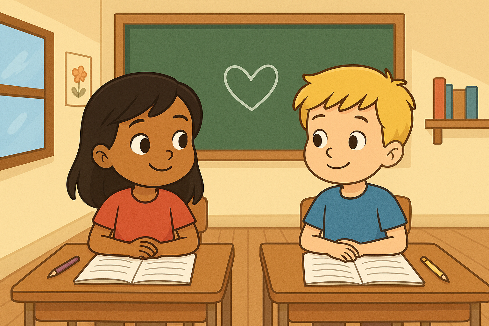
🐵 En Güzel Anımız: Otobüste Karşılaşma 🐵
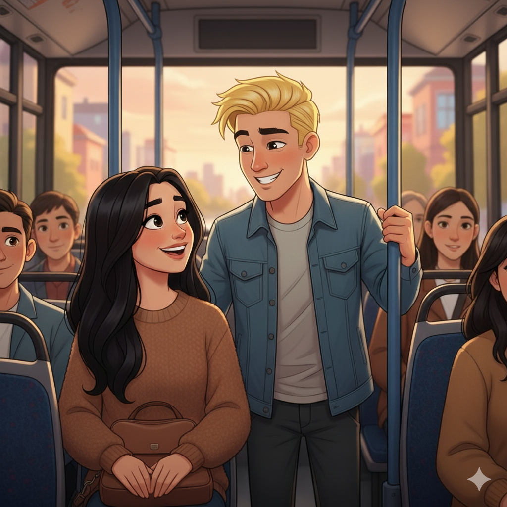
Yıllar sonra bir otobüste, şans eseri yeniden karşılaştığımızda kalbim duracak gibi olmuştu. Sanki zaman hiç geçmemişti. O an, bir otobüs yolculuğunu hayatımın en güzel macerasına çevirmiştin.
🐵 Ezgi Şefe ilk hediye 🐵
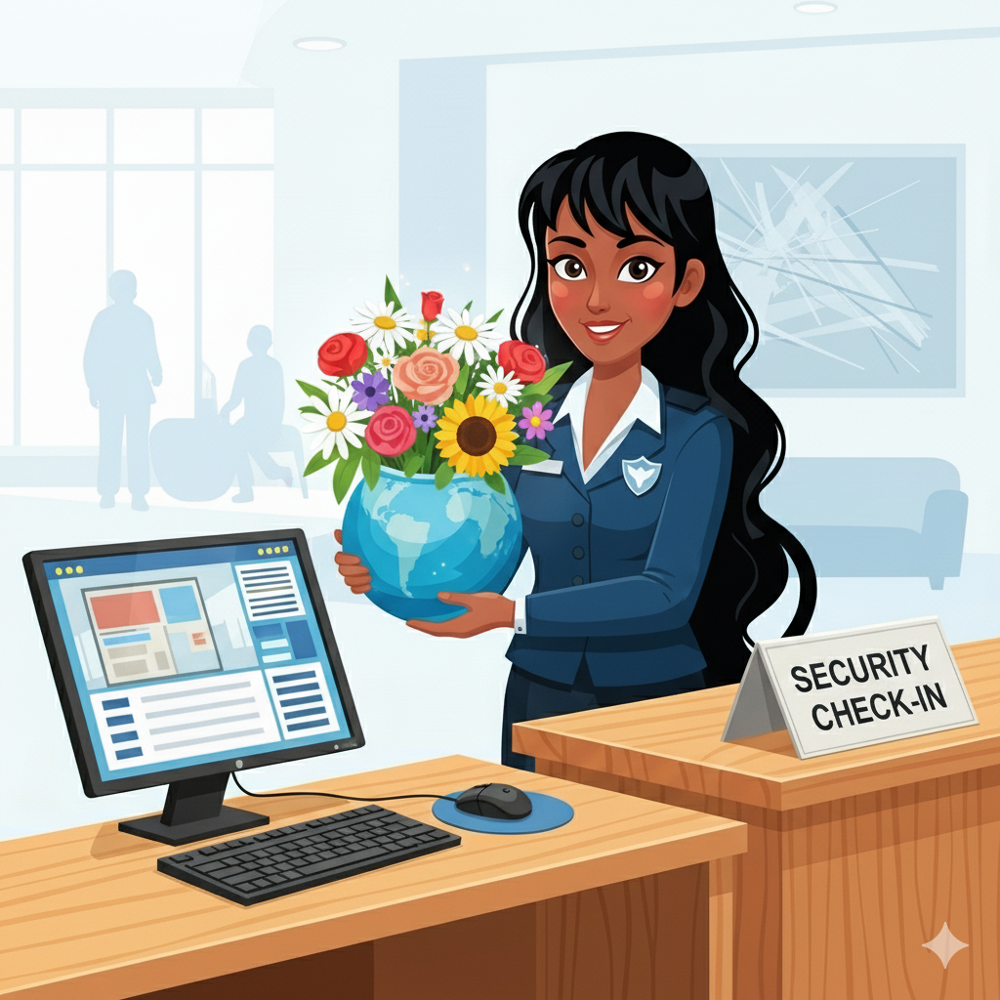
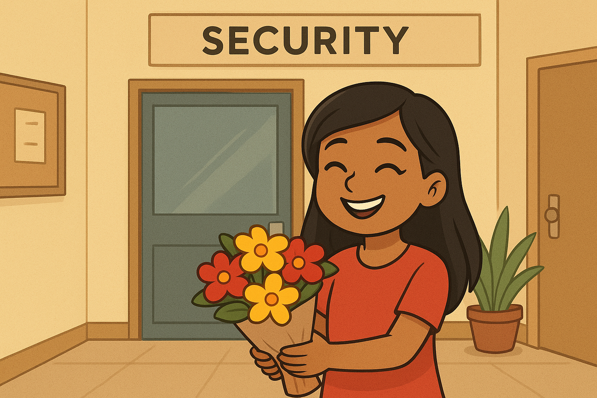
O gün çok heyecanlıydım... ilk kez çiçek gönderiyordum. Telefonun başında heyecanla beklerken, o anın ne kadar özel olacağını düşündüm. Çiçekler ulaştığında.Beni aradığında ki ses tonun benim için hayattaki en kıymetli anlardan biriydi. O gün, seni ne kadar çok sevdiğimi bir kez daha anlamıştım
🐵 Hikayemizde Önemli Bir Yer: Ezgi'nin Babası 🐵
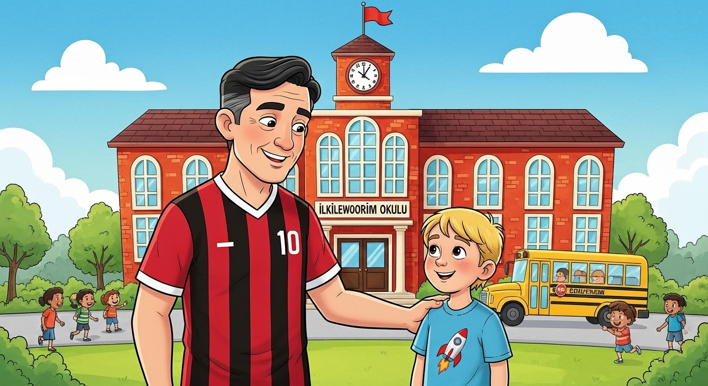
Hikayemiz sadece Ezgi ve benden ibaret değil. İlkokul yıllarımızda bizi sürekli güldüren, bizimle oyunlar oynayan ve her zaman yanımızda olan bir kahraman vardı: Ezgi'nin babası Ali Amca. O, daha o zamanlarda bile benim için çok özeldi. O günlerde ne kadar büyük bir aile olacağımızı bilemezdik ama o sıcak anılar, bugünkü ilişkimizin ne kadar sağlam temeller üzerine kurulduğunu gösteriyor. Ali Amca, benim için her zaman özel bir yerde kalacak.
🐵 İlk Buluşma: Hayatımın En Güzel Günü 🐵
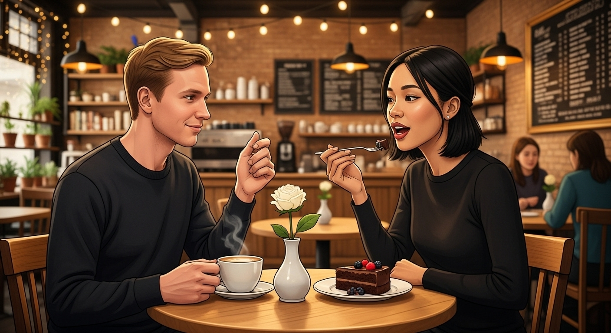
O gün hayatımın geri kalanını şekillendirecek ilk adımı atmıştım. Buluşma yerine giderken kalbim yerinden çıkacak gibiydi. Seni gördüğüm o ilk an, sanki dünya durmuş gibiydi. Ne diyeceğimi bilemedim, sadece gülümseyebildim. O günden sonra her şey değişti. O ilk buluşma, aramızdaki bağın ne kadar özel ve güçlü olacağının ilk işaretiydi.
🐵 Luna ile Tanışma: Sana Bir Kez Daha Aşık Oldum 🐵
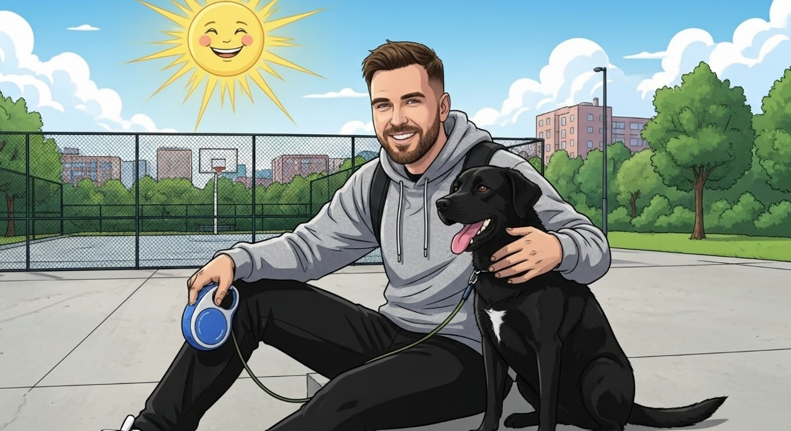
Bugün senin küçük dostunla tanışmak, hayatımın en güzel anılarından biri oldu. Onun beni ne kadar çabuk sevdiğini görünce, içimden 'Sana bir kez daha aşık oldum' diye geçirdim. O kadar sıcakkanlı ve sevimli ki, tıpkı senin gibi. Bu an, aramızdaki bağın ne kadar özel olduğunu bana bir kez daha gösterdi.Luna ve Seninle ömrümün sonuna kadar vakit geçirmek istiyorum.Tabi ki Parisi'de unutmamak gerekiyor.
🐵 Spor Salonu : Seninle Her Şey Daha Eğlenceli🐵
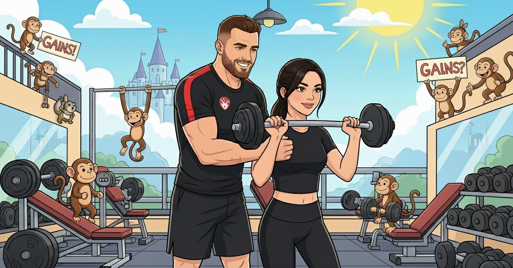
Spor yapmak benim için genelde bir görev gibiydi, ta ki o güne kadar. Seninle spor salonunda geçirdiğimiz o birkaç saat, hayatımın en keyifli anlarından biriydi. Her şey daha eğlenceli, daha anlamlı hale geldi. Terlerken bile gülüyorduk, çünkü yanımda sen vardın. En sıkıcı anları bile sihirli hale getirebilme yeteneğin var. İyi ki hayatımdasın.
🐵Konya : İki Otistiğin Serüveni🐵
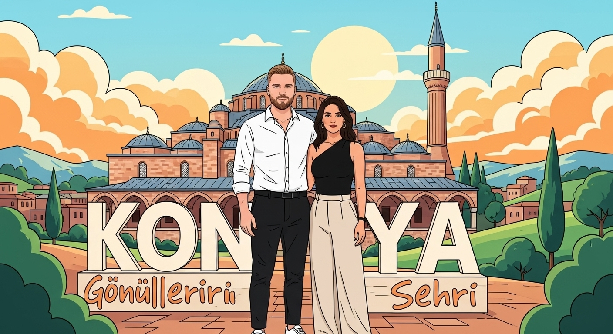
O gün asıl amacımız yakın bir arkadaşımın nişanına katılmaktı. Aylar öncesinden planlanmış bir merasime katılmak bile istemiyordum ta ki seninle karşılayıncaya kadar seninle birlikte trenle seyahat etmek, hiç bilmediğim bir şehri (Konya'yı!) keşfetmek ve nişanda yeni insanlarla tanışmak,insanlarla olan iletişimin içimin rahat oluşu o günü tarifsiz bir duyguya çevirdi.O gün, sadece bir nişana değil; yeni deneyimlere, keşiflere ve en önemlisi, seninle paylaşılan her maceraya bir kez daha "evet" dedim. Hayatımı seninle böyle güzel anlarla doldurduğun için teşekkür ederim.İyi ki benim Küçük balığımsın Broski
Ezgi + Luna + Atakan = Dünyanın en otistik acil servis ekibi 🐶❤️
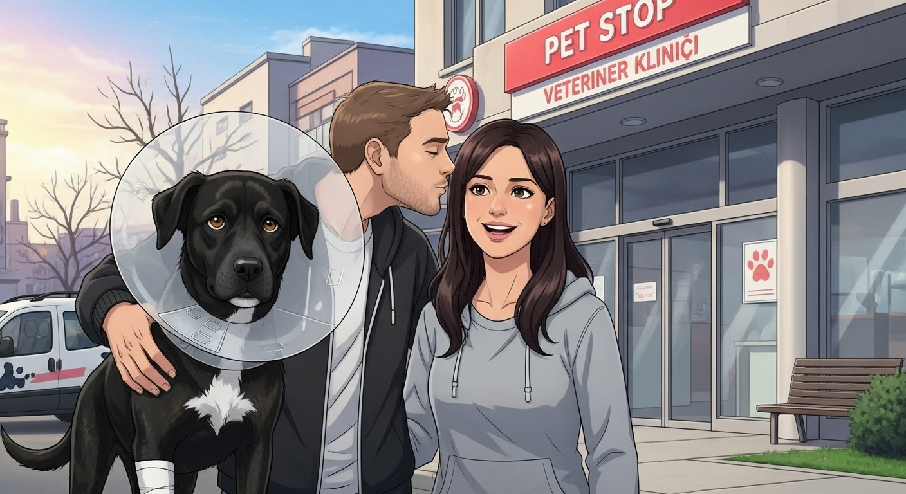
O gece, Luna'nın ayağındaki kanamayı gördüğümüzde büyük bir endişe yaşadık. Gecenin bir yarısı hemen veterinere gittik, sargı yapıldı ve antibiyotik tedavisine başlandı. Yorucu bir geceydi, ama o an tek düşündüğüm senin huzurun ve mutluluğundu. Senin, Luna'ya olan bağlılığını ve endişeni gördüğümde, elimden gelen her şeyi yapmaya kararlıydım.Senin mutluluğun için her şeyi yapmaya hazır olmamın seni ne kadar mutlu ettiğini biliyorum.Zor zamanlarda bile yan yana olmamız, bizi birbirimize daha da sıkı bağlıyor. Seni seviyorum.
🎉 KASST Günü: Kısmet ve İlk Konserimiz
Konser öncesi büyük bir sürpriz vardı! Ezgi'nin İngiltere'den gelen en yakın arkadaşı **Kısmet** ile tanıştım. O kadar kafa dengi ve eğlenceliydi ki, hemen kaynaştık. Güzel bir gün geçirdik.Ezgiy ilk defa hayatında ki biri için desteklediğini söyledi ve bunu beni aşırı mutlu etti sonuçta ezginin nikah şahidi olucak kişi o ''Temudan aldığımız Berat''
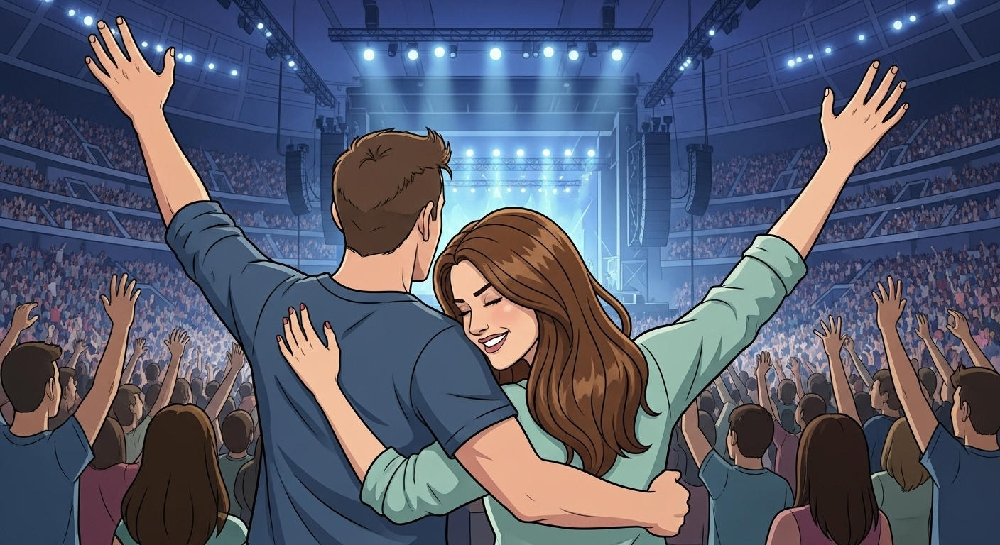
KASST Günü, seninle geçirdiğimiz en eğlenceli akşamlardan biriydi! Birlikte coşup, dans ettiğimiz o anlar unutulmazdı. Bu, bizim ilk konserimizdi ve anılarımıza bir yenisini daha ekledik. İyi ki yanımdasın daha fazla detay veremiyorum 😉 Gizli kelimeler (Micheal jackson taklidi).
Bir Gün, Üç Kalp ve Bir Bağ
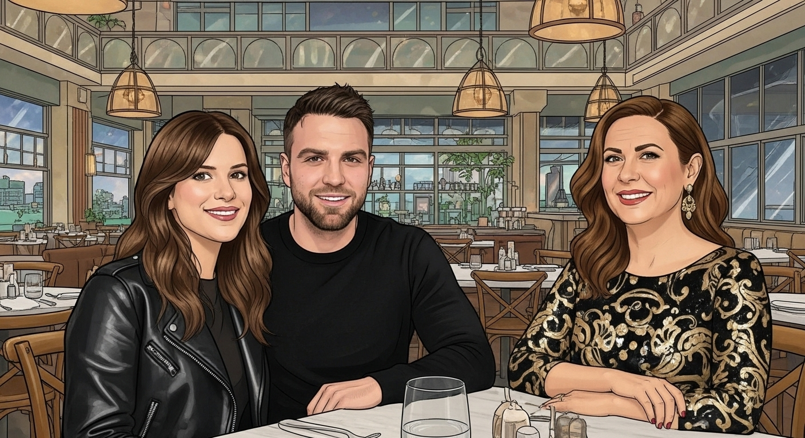O günü düşündükçe hâlâ içimde o tatlı heyecanı hissediyorum. Sabah biraz telaşlıydım; çünkü Atakan’ın hayatındaki en özel insanlardan biriyle, halası Özlem Teyze’yle tanışacaktım. ‘Beni sevecek mi, bana ısınacak mı?’ diye düşünürken, heyecandan ayağım kaydı ve Atakan beni havada yakaladı (teşekkürler 😅). Ama o gerginlik çok kısa sürdü. Özlem Teyze’nin içtenliği, samimiyeti ve sıcak gülüşüyle kendimi bir anda ailenin bir parçası gibi hissettim. O gün, sadece bir tanışma değil; içimde güven, sevgi ve huzurla büyüyen bir bağın başlangıcıydı. Hem bana bu duyguyu yaşattığın için sana, hem de kalbime samimiyetinle dokunduğun için Özlem Teyze’ye teşekkür ederim. 💕
Soğuğa Rağmen Sıcaktık: O Gece
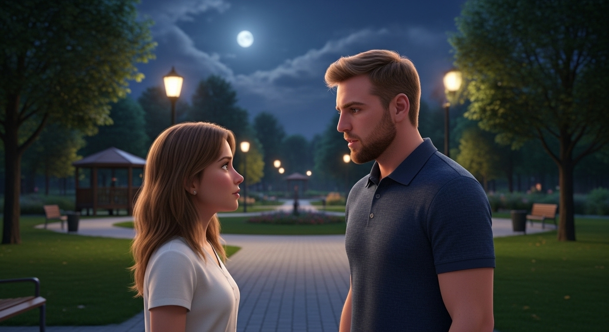o gün saatler geceyi çoktan geçmiş, hava buz gibiydi, ikimiz parkın ortasında hem üşüdük hem de birbirimize sığındık. Başta yüksek seslerle başlayan tartışmamız, bir anda içimizi açtığımız, en derin yerlerimize dokunduğumuz bir konuşmaya döndü. O an, dışarıdaki bütün soğuğa rağmen, içimde tarifsiz bir sıcaklık hissettim. Birbirimizin nefesini hissederek, göz göze bakarak yaptığımız o konuşmada gelecek hayallerimiz, planlarımız, birbirimize dair umutlarımız vardı. Yıllarca büyüdüğüm, yanında yaşadığım o parkta ilkokul arkadaşım, sevgilim ve ilerideki eşim olacak kişiyle ( dünyalar tatlısı biriyle ) bu konuşmaları yapacaksın deseler asla inanmazdım. Belki çok tartıştık, belki çok yorulduk ama o gece anladım ki biz konuşarak büyüyen bir bağa sahibiz. Ne olursa olsun, birbirimize sarılınca yumuşayan, kavgalı duramayan, konustukca güçlenen bir sevgimiz var. O geceden sonra kendimizi daha “biz” hissettim. Sanki ikimiz de aynı anda “tamam, işte bu” demiş gibiydik. Ben o geceyi kalbimde saklıyorum; çünkü o soğuk gecede çok sıcak bir “biz” doğdu. Ve ben o anın, seninle yaşayacağımız binlerce güzel şeyden sadece biri olduğunu biliyorum. Seni çok seviyorum
🔥 Sims Felaketi: Sevgi ve Yanan Mutfak 😂
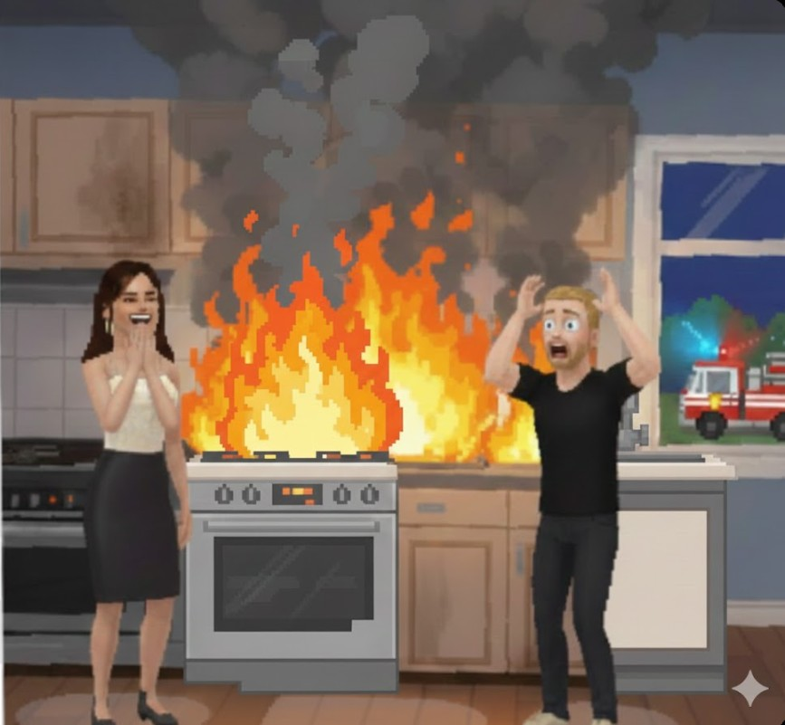
Ezgi, bizim için Sims'te küçük bir dünya kurduğunda ne kadar mutlu olduğumu anlatamam.
Ben, o ve Paris… Hep birlikte aynı evde, aynı hayatta, aynı hikâyenin içinde olmak öyle güzel hissettirdi ki.
Bir kafede oturmuş oyunu oynarken, oyunda büyük bir özgüvenle yemek yapmaya başladım…
Ama sonra bir şey oldu ki gerçek hayatta bile başıma gelmez:
Mutfak cayır cayır yanmaya başladı! 😂
Yangının sebebini biliyoruz ikimizde 😉 Ben panik olmuşum, Ezgi kahkahalarla izliyor… Paris’in piksel hali evin içinde koşuyor…
Sonra itfaiye gelip evi kurtardı, biz ise gülmekten kendimize gelemedik.
O Sims anı, bizim ilişkimizin küçük bir özeti gibiydi aslında:
Birlikteyken en saçma şey bile eğlenceli, en kaotik an bile komik ve en sıradan gün bile güzel oluyor.
Belki oyunda mutfağı yaktım ama…
seninle aynı evde, aynı hayatta yanmaya razıyım aşkım. 🔥❤️😂
Sisler Dağılınca Gelen Netlik: İlk Rakı
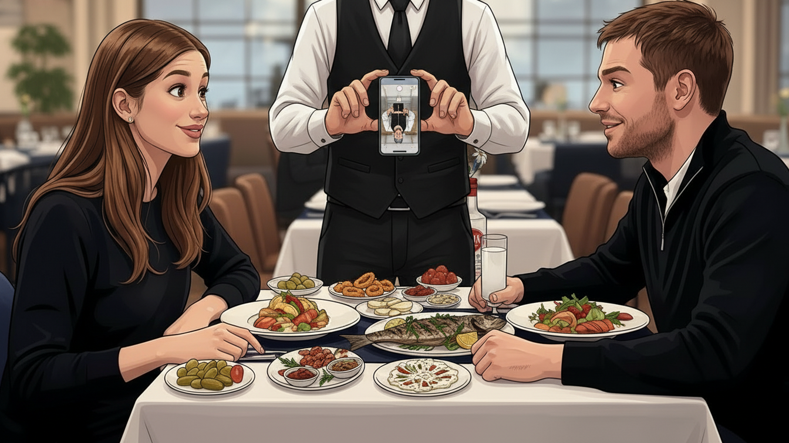Seninle özel anlarımızda biliyorsun ki her zaman tuhaf şeyler oluyor o günü bize hatırlatmaya ekstra imkan sağlayacak şekilde. İlk rakımız da aynen bu şekildeydi sanki seninle başka diyarlara gitmişim gibi hissettim hani sis varmış da sonra her şey netleşmiş gibi bir sabah hayatımda. her neyse öncelikle masamızdan başlamak istiyorum ; gittiğimiz yerde benim bildiğim önceden tanıdığım bazı mezeler de vardı ve seni onlarla tanıştırdım ; kıvırcık ve yanında hemen dibinde beyaz bir dağınık tabakta meze vardı ikisini hiç sevmedin başta. Özellikle kıvırcık salata hiç senlik değildi ama bu ikisini bence aklımıza geldikçe nasıl Yanyana duruyorlar diye düşünüp buna bile gülebiliriz. Onun dışında marjinal olarak yanında başka bir meze vardı bunların ama onu sevdin tekrar karşılaşsan senlik sorun olmayacak türdendi umarım bir gün daha geniş bir vaktimizde o mezeden de alırız. Çok romantik bir geceydi benim için çünkü seninle sohbet etmeyi, her konuda konuşmayı daha da özel kılan anlardı her zaman olduğu gibi orada da senin yanında kendimi güvende ve evimde gibi hissettim. ilk rakımızı hep hatırlayacağım askım. Özellikle de fotoğrafımızı çeken amcayı onu da unutmamak lazım tersten bile çekmişti tabi orada da kahkahayı bastık farkında mısııınnn :D seninle farklı yerlere gidip yeni şeyler denemek çok güzel bu özelliğimiz hiçbir zaman degismeyecek buna eminim seni seviyorum
Sisler Dağılınca Gelen Netlik: İlk Rakı
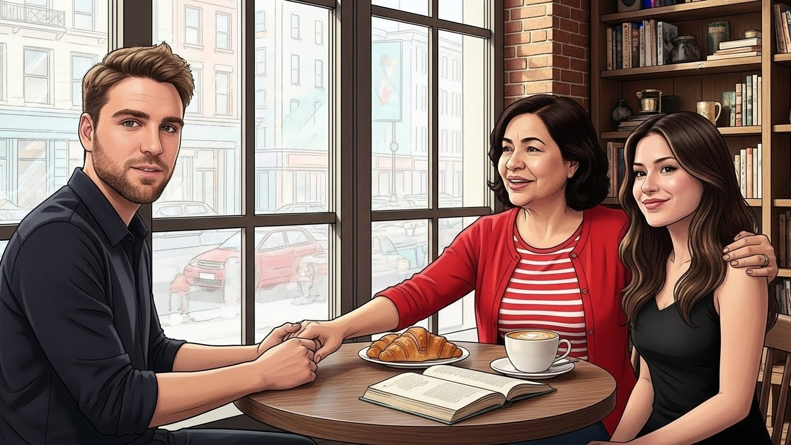
Ezgi’nin annesi ile tanıştım. O kadar heyecanlıydım ki… O gün sabahı Ezgi ile beraber spor salonuna gittik. Spordan sonra Mensure teyzem için güzel ve zarif bir çiçek aldım.
Ben erkenden gitmiştim buluşacağımız yere. Ezgi ve Menşure Teyze gelince bende film koptu :)) Ellerinden öptüm, yumuşacıktı. Ezgi ile gayet resmi merhabalaştık, kendisi çekindi biraz da annesinin yanında 😉
Beraber delicesine eğleneceğimiz ve dinleneceğimiz bir tatil. Bahçesinde Luna'nın koşturacağı, anılarla dolu yuvamız. Hayatımızı birleştireceğimiz ve sonsuzluğa adım atacağımız o an. Küçük balığımın yapmak istediği gördüğümüz her şeyi yediğimiz bir gezi. Bize ait en tatlı, en komik ve en anlamlı anlarımızdan oluşan, hayatımızın bir özeti!
Beraber oturduk, çay içtik, tatlı söyledik. Derken Menşure Teyze’den öyle bir cümle geldi ki: “Ailemize hoş geldin.” O kadar duygulandık ki Ezgi ile gözler doldu.
Hemen bizim bu kadar duygunun üstüne malum olay başıma geldi; iş yerinde sistem sorunu çıktı ve işe gitmem gerekti. O kadar mahcup oldum ki böyle bir olayın başıma gelmesine… Tadına varamamıştım, tam yeni yeni üzerimdeki çekingenliği atıyordum. Çok sinirlendim bu duruma ama Menşure Teyze ve Ezgi o kadar anlayışlı insanlar ki…
İyi ki hayatımda varlar ve hep olacaklar.
Sizi çok seviyorum...
✨ Gelecek Hayalleri Panomuz ✨
Birlikte Tatil Yapmak
Kendi Evimiz
"Evet" Diyeceğimiz O Gün
"Doğu Lezzet Turu
📸 Sonsuz Anılarımızın Köşesi 📸
{kind=link}
{kind=link}
{kind=link}
{kind=link}
{kind=link}
{kind=link}
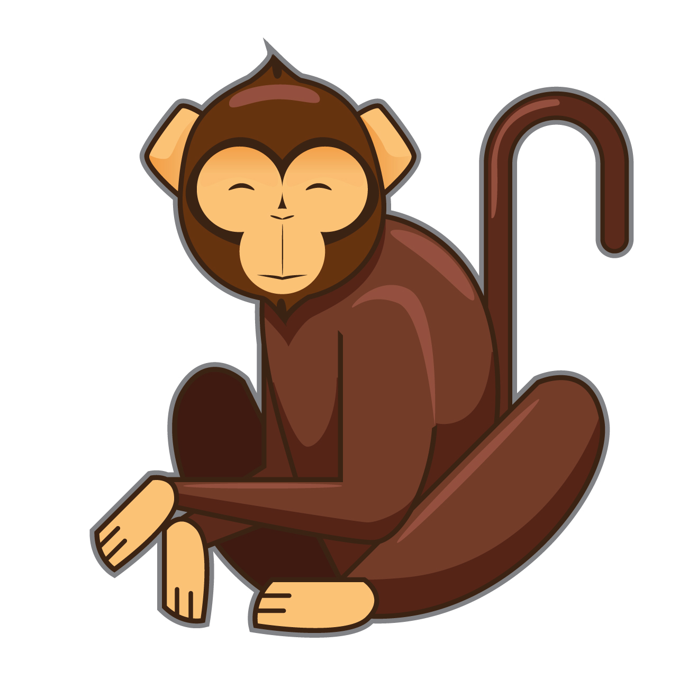
Merhaba! 🦍